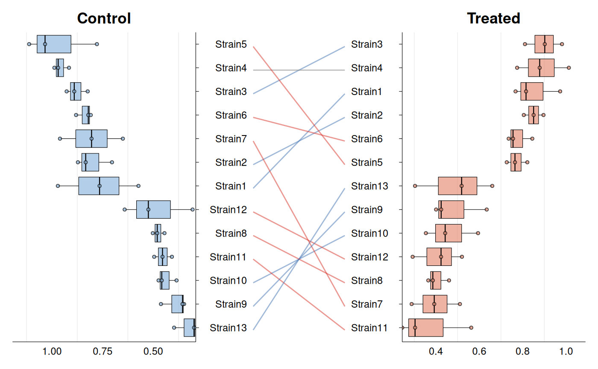
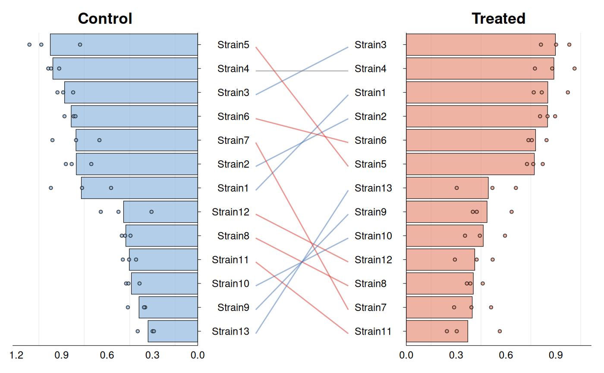
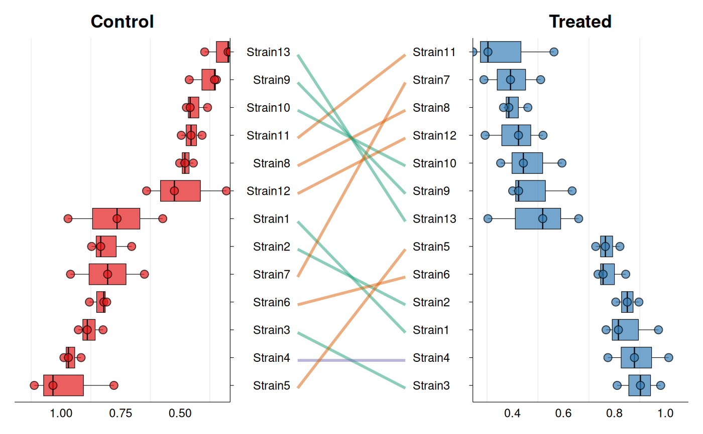

Creates a three-panel visualization comparing ranks of samples between two groups. Left and right panels show distributions (bars or boxplots) for each group ordered by rank. The center panel displays connecting lines colored by rank change direction, revealing which samples improved, declined, or maintained their relative position.
Usage
gg_rankshift(
data,
id = "id",
group = "group",
value = "value",
style = "box",
fill = NULL,
alpha = 0.7,
line_alpha = 0.5,
line_width = 0.5,
panel_ratio = 0.5,
text_size = 11,
show_points = TRUE,
point_size = 1,
point_shape = 21,
point_alpha = 0.7,
stat_summary = "mean",
decreasing = FALSE,
free_x = TRUE,
rank_change_colors = c(increase = "#d73027", decrease = "#4575b4", no_change =
"grey50")
)Arguments
- data
A data frame containing the data to visualize.
- id
Character string specifying the column name in
datathat contains sample identifiers. Default is "id".- group
Character string specifying the column name in
datathat defines the two groups to compare. Must contain exactly 2 unique values. Default is "group".- value
Character string specifying the column name in
datathat contains the numeric values used for ranking. Default is "value".- style
Character string specifying visualization type:
"bar"for barplots or"box"for boxplots. Default is "box".- fill
Character vector of length 2 specifying fill colors for the two groups. If NULL (default), uses
c("#92b9de", "#e8927c").- alpha
Numeric value (0-1) specifying transparency of bars/boxes. Default is 0.7.
- line_alpha
Numeric value (0-1) specifying transparency of connecting lines. Default is 0.5.
- line_width
Numeric value specifying width of connecting lines. Default is 0.3.
- panel_ratio
Numeric value specifying the relative width of the center line panel compared to side panels (which have width 1). Default is 1.
- text_size
Numeric value specifying the base size for axis text. Default is 11.
- show_points
Logical indicating whether to overlay individual data points on bars/boxes. Default is TRUE.
- point_size
Numeric value specifying size of points when
show_points = TRUE. Default is 1.- point_shape
Numeric value (0-25) specifying point shape when
show_points = TRUE. Default is 21 (filled circle).- point_alpha
Numeric value (0-1) specifying transparency of points when
show_points = TRUE. Default is 0.7.- stat_summary
Character string specifying the summary statistic used for ranking:
"mean"or"median". Default is "mean".- decreasing
Logical indicating rank order direction. If TRUE, higher values receive lower rank numbers (rank 1 = highest value). If FALSE, lower values receive lower rank numbers. Default is FALSE.
- free_x
Logical indicating whether x-axes are independent between panels. If FALSE, both panels share the same x-axis limits. Default is TRUE.
- rank_change_colors
Named character vector of length 3 specifying colors for rank changes. Must contain names
"increase","decrease", and"no_change". Default isc(increase = "#d73027", decrease = "#4575b4", no_change = "grey50").
Value
A patchwork object combining three plots: left panel showing the first group's distribution, center panel showing rank change lines, and right panel showing the second group's distribution. Line colors indicate whether samples increased in rank (moved up), decreased in rank (moved down), or maintained the same rank between groups.
Details
The function identifies samples common to both groups, calculates summary statistics (mean or median) for each sample within each group, and assigns ranks based on these values. Samples are then displayed in rank order with connecting lines showing how ranks changed between groups.
When style = "box" and show_points = TRUE, boxplots display
the distribution while individual points show all replicates. This is useful
for visualizing measurement variability alongside rank changes.
The decreasing parameter controls ranking direction:
FALSE(default): Rank 1 = lowest value, higher ranks = higher valuesTRUE: Rank 1 = highest value, lower ranks = lower values
Examples
# Example data: bacterial strain growth rate control vs antibiotic treated
growth_data <- data.frame(
strain = rep(paste0("Strain", 1:13), each = 6),
condition = rep(c("Control", "Treated"), each = 3, times = 13),
growth_rate = c(
rnorm(39, mean = 0.85, sd = 0.12), # Control
rnorm(39, mean = 0.45, sd = 0.10) # Treated (reduced growth)
)
)
# Basic rank shift plot
gg_rankshift(
data = growth_data,
id = "strain",
group = "condition",
value = "growth_rate",
)

# With barplots instead of boxplots
gg_rankshift(
data = growth_data,
id = "strain",
group = "condition",
value = "growth_rate",
style = "bar"
)

# Custom styling
gg_rankshift(
data = growth_data,
id = "strain",
group = "condition",
value = "growth_rate",
fill = c("#e41a1c", "#377eb8"),
rank_change_colors = c(
increase = "#1b9e77",
decrease = "#d95f02",
no_change = "#7570b3"
),
panel_ratio = 0.5,
point_size = 2.5,
line_width = 1,
decreasing = TRUE
)
